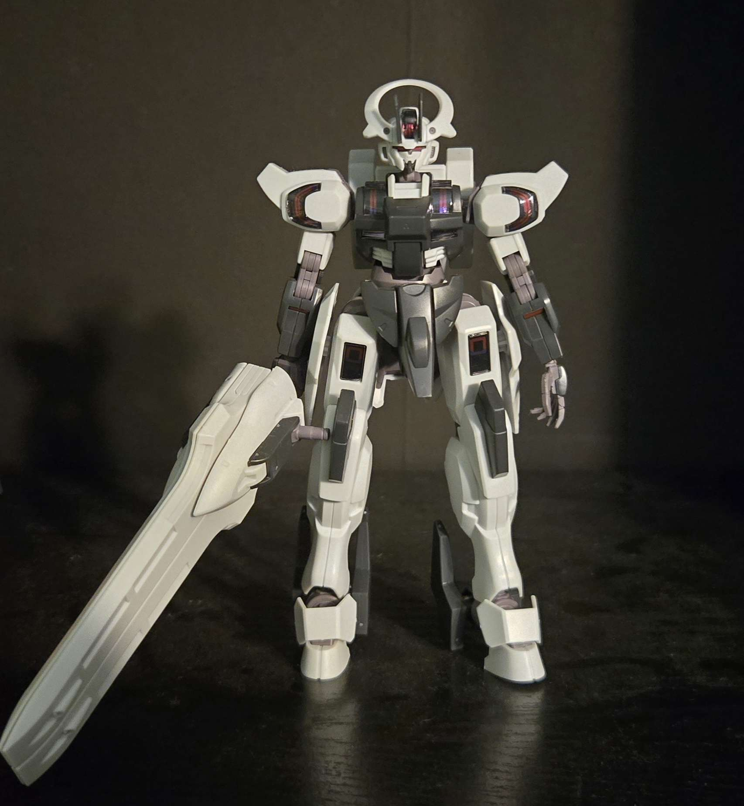

HG Gundam Schwarzette
Tools I Used on The Build:
- Ruitool Model 01 Nipper
- Bauer 800 Grit Sandpaper
- Bauer 1200 Grit Sandpaper
- Exacto Knife
- Tweezers
- Polishing Cloth
Thoughts:
This is my favorite High Grade model kit! I took a break after finishing the HG Vidar kit. During this time, I invested in better sandpaper and an Exacto knife to help remove excess plastic when I started building model kits again. I completed this build fairly quickly as it only had 3 three runners that contained every piece needed for the build. It is high quality and extremely posable!
Completed Parts:
- Head Piece
- Torso
- Left Arm
- Right Arm
- Waist
- Left Leg
- Right Leg
- Sword
- Accessories
Click Model Name to go Back to Gallery!
